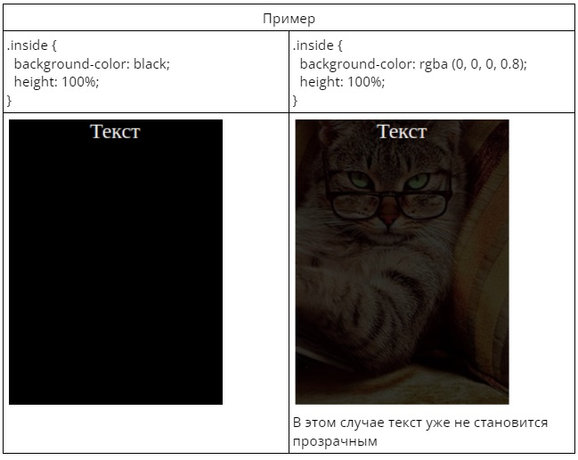

Тени, прозрачность
С помощью CSS можно добавить тень к тексту и к элементам.
Свойство CSS text-shadow применяет тень к тексту.
Общий вид свойства text-shadow:
- text-shadow: смещение по x | смещение по y | радиус размытия | цвет;
Радиус размытия задавать не обязательно.
|
|
|
Без размытия
Новое поколение
|
C размытия
Новое поколение
|
Можно задать несколько теней для текста через запятую
|
|
Новое поколение
Как видите у нас получилось и задать размытие и добавить тень к тексту
|
С помощью свойства text-shadow можно создать границу для текста
|
|
Новое поколение
Первая тень создает границу слева, вторая снизу, треться справа, четвертая сверху
|
Свойство CSS box-shadow применяет тень к элементам.
Общий вид свойства text-shadow:
- box-shadow: смещение по x | смещение по y | радиус размытия |радиус распространения | цвет;
Радиус распространения отвечает за то насколько тень будет сильно распространяться от элемента. Положительные значения увеличивают тень, отрицательные сжимают.

Прозрачность элементов CSS
1. Свойство opacity
Свойство opacity позволяет сделать любой элемент веб-страницы частично или полностью прозрачным. Данное свойство изменяет прозрачность элементов, для которых установлено фоновое изображение (картинка) или задан фон с помощью цвета или градиента.
Если элемент, для которого применено свойство opacity, содержит внутри себя другие элементы, то они также изменят свою прозрачность. Свойство opacity принимает значения в диапазоне от 0 (полностью прозрачный) до 1 (непрозрачный), например:

2. Функция rgba()
Цветовая модель RGBA создает цветовой оттенок путем смешивания в необходимых пропорциях красного (Red), зеленого (Green) и синего (Blue) цветов, а альфа-канал (Alpha) отвечает за степень прозрачности цвета. В отличие от свойства opacity, для блока, содержащего другие элементы, функция rgba() изменит прозрачность только блока.
